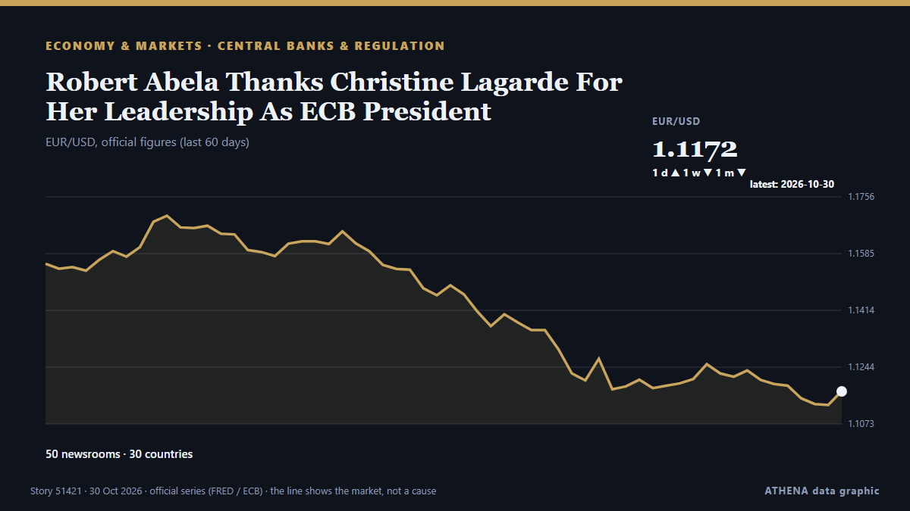

Robert Abela Thanks Christine Lagarde For Her Leadership As ECB President

European Central Bank President Christine Lagarde will step down on Feb. de CNBC Economy
Relayé de façon indépendante par 50 médias dans 30 pays depuis le 29 oct. ; premier à l'annoncer : Luxembourg Times ; la couverture faiblit. ATHENA juge le risque faible (1.8/10), surtout en raison de la gravité des dommages décrits et de sa portée géographique et sectorielle. La confiance est de 86 % (élevée) : 50 médias indépendants le confirment, avec une fiabilité moyenne des sources de 75 %. Médias par pays : Singapour (6), Royaume-Uni (5), Nigeria (3). Couverture : du 29 oct. au 29 oct., 8 heures.
Pourquoi c'est important: Les banques centrales fixent le prix de l'argent ; leurs décisions font bouger devises, obligations, crédits immobiliers et bourses dans le monde.
Ce qui a changé : 15 nouveaux articles de 12 rédactions dans les 24 heures jusqu'au 30 oct..
Premier titre : European Central Bank (ECB) head Christine Lagarde to step down in February, before her term ends
Les titres sont affichés en anglais, tels que publiés.
En un coup d'œil
Sélectionné, noté et rédigé par la méthodologie publiée d'ATHENA. Aucun rédacteur n'intervient sur un événement en particulier. Comment il est produit ›
| 29 Oct 05:40 UTC | 1 |
|---|---|
| 29 Oct 07:40 UTC | 1 |
| 29 Oct 09:40 UTC | 33 |
| 29 Oct 11:40 UTC | 9 |
| 29 Oct 13:40 UTC | 9 |
| 29 Oct 15:40 UTC | 6 |
| 29 Oct 17:40 UTC | 2 |
| 29 Oct 19:40 UTC | 2 |
| 29 Oct 21:40 UTC | 2 |
| 29 Oct 23:40 UTC | 0 |
| 30 Oct 01:40 UTC | 0 |
| 30 Oct 03:40 UTC | 2 |
| 30 Oct 05:40 UTC | 1 |
| 30 Oct 07:40 UTC | 0 |
| 30 Oct 09:40 UTC | 0 |
| 30 Oct 11:40 UTC | 0 |
| 30 Oct 13:40 UTC | 1 |
| 30 Oct 15:40 UTC | 1 |
| 29 Oct 08:36 UTC | 1.3 |
|---|---|
| 29 Oct 11:06 UTC | 2.2 |
| 31 Oct 18:57 UTC | 1.8 |
| 31 Oct 18:57 UTC | 1.8 |
Pourquoi ces chiffres
Importance
Risque
Confiance
La couverture : qui l'a annoncé, et quand
titre tel que publié · ouvre l'original- Luxembourg Times · LuxembourgECB set to hold rates to assess France and energy risks
- Business Recorder · PakistanEuropean shares inch up ahead of ECB as earnings remain in focus
- to vima · GrèceLagarde to Exit ECB as Europe Faces Economic Headwinds
- European Central Bank press · AllemagneECB President Lagarde to step down on 7 February 2027
- CNBC Economy · États-UnisThe politics of President Lagarde's European Central Bank early exit — and who could replace her
- The Straits Times · SingapourEuropean Central Bank president Christine Lagarde resigns after months of speculation
- Politico Europe · BelgiqueLagarde’s early exit Le Pen-proofs ECB as France veers toward a debt reckoning
- France 24 English · France🔴 ECB President Christine Lagarde to step down in February 2027, months before term ends
- Vanguard · NigeriaECB President Christine Lagarde to step down in February 2027
- Luxembourg Times · LuxembourgChristine Lagarde to step down as ECB president in February
- CNA (Channel NewsAsia) · SingapourECB President Lagarde resigns after months of speculation
- The Independent · Royaume-UniEuropean Central Bank President Christine Lagarde will resign Feb. 7, ahead of term
- DW English · AllemagneEuropean Central Bank (ECB) head Christine Lagarde to step down in February, before her term ends
- RTÉ News · IrlandeLagarde announces resignation after months of speculation
- Xinhua (English) — page reader · ChineUrgent: Lagarde to step down as ECB president in February
- The Straits Times · SingapourECB President Lagarde resigns at time of mounting challenges for Europe
- Euractiv · BelgiqueLagarde to step down as ECB president
- Stuff · Nouvelle-ZélandeEuropean Central Bank President Christine Lagarde to resign nine months early
- The Korea Times · Corée du SudEuropean Central Bank President Christine Lagarde will resign Feb. 7, ahead of term
- Guardian Business · Royaume-UniEurope’s central bank chief, Christine Lagarde, steps down for ‘freedom of speech’
- Cyprus Mail · ChypreLagarde quits ECB nine months early as eurozone faces fresh interest rate pressure
- CNA (Channel NewsAsia) · SingapourEuropean Central Bank President Christine Lagarde to step down months before term ends
- ProtoThema English ·Lagarde to step down as ECB president in February – Pierrakakis thanks her for contribution to eurozone stability
- Business Recorder · PakistanECB President Lagarde resigns at time of mounting challenges for Europe
- The Straits Times · SingapourChristine Lagarde: The outsider who led the ECB her way
- Rappler · PhilippinesECB President Lagarde resigns at time of mounting challenges for Europe
- TheJournal.ie · IrlandeChristine Lagarde to step down as president of European Central Bank
- Free Malaysia Today · MalaisieECB president Lagarde resigns at time of mounting challenges for Europe
- Central Banking · Royaume-UniLagarde to step down from ECB
- APA (English) · AzerbaïdjanChristine Lagarde to step down as ECB president in February
- The Economist - Finance & economics · Royaume-UniChristine Lagarde departs at a moment of peril
- Sky News (World) · Royaume-UniWill she stand? Lagarde quits European Central Bank ahead of French election
- The National · Émirats arabes unisECB President Christine Lagarde resigns after months of speculation
- Punch · NigeriaChristine Lagarde to step down as European central bank president
- Global News (World) · CanadaEuropean Central Bank chief resigns as economic volatility worsens
- Baltic News Network · LettonieChanges at the European Central Bank – Lagarde announces early resignation
- Türkiye Today · TurquieECB chief Lagarde to step down early, triggering leadership race
- Channels TV · NigeriaECB President Christine Lagarde To Step Down In February 2027
- Xinhua (English) — page reader · ChineLagarde to step down early from ECB as search for successor begins
- The Business Times · SingapourECB president Christine Lagarde resigns at time of mounting challenges for Europe